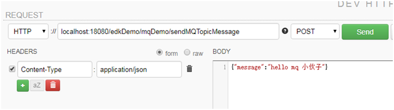
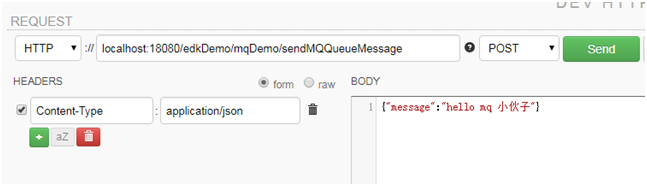

20.1.7、测试

前台提交后，生产者会将消息推送到activemq服务器，后台查看消费者的日志：
2018-04-20 12:47:43,441 INFO DefaultMessageListenerContainer-1 c.s.e.s.i.DemoActiveMQTopicConsumer - BizService [Host: admin-PC, RequestNo: N/A] 从activeMQ服务器获得Topic消息：topic message, 1

前台提交后，生产者会将消息推送到activemq服务器，后台查看消费者的日志：
2018-04-20 12:47:40,499 INFO DefaultMessageListenerContainer-1 c.s.e.s.i.DemoActiveMQQueueConsumer - BizService [Host: admin-PC, RequestNo: N/A] 从activeMQ服务器获得Queue消息：hello mq 小伙子, 1